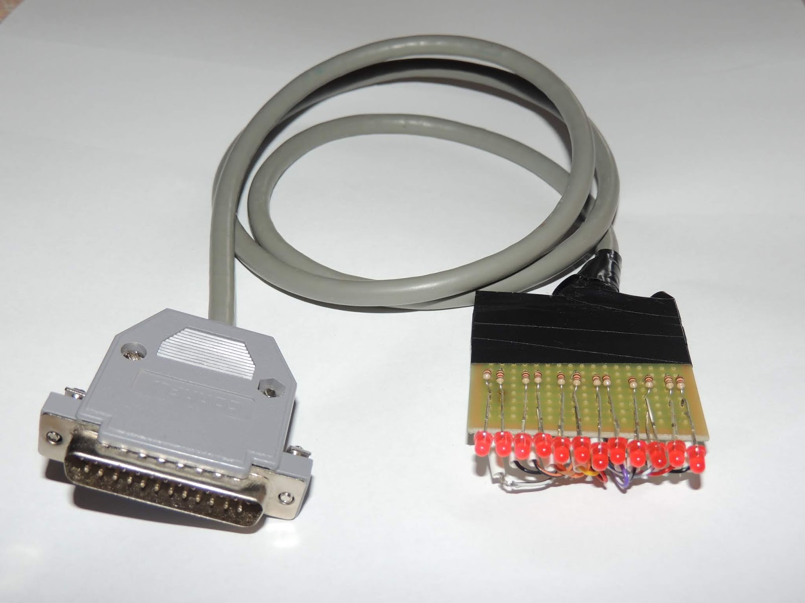
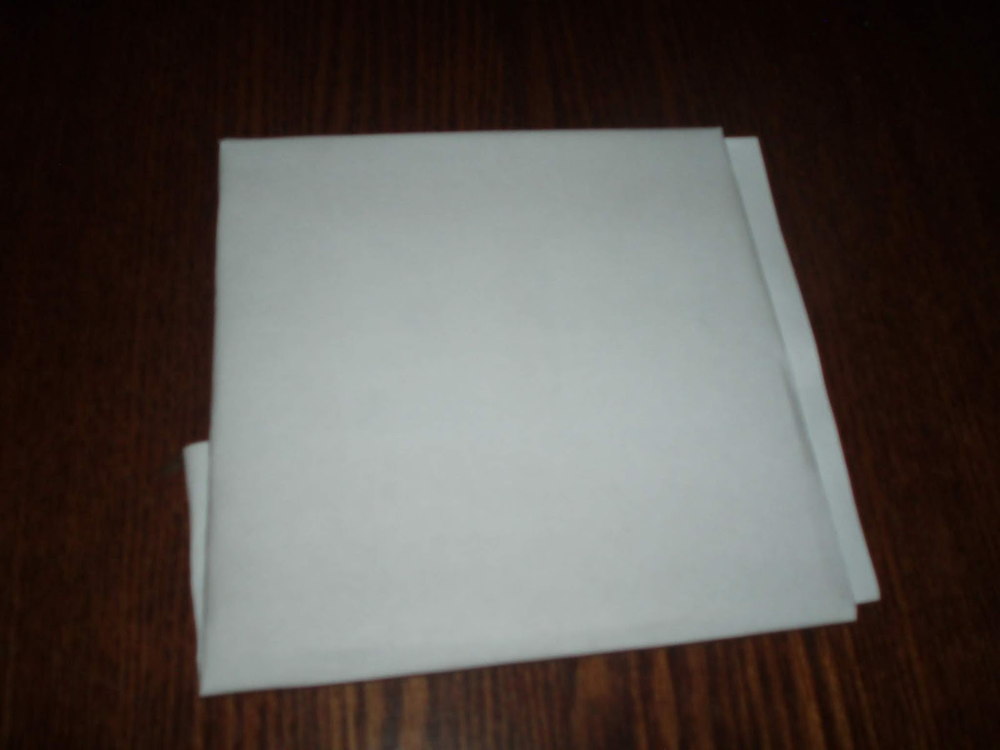

Светодиодный индикатор для подключения к параллельному порту
1. Введение
В детстве я интересовался электроникой, но интерес этот был чуть более чем чисто теоретическим. А заинтересовался я ей, когда увидел в ларьке с газетами книгу "Электронные самоделки" Б. С. Иванова.
Родители купили мне эту книгу, я с интересом читал описания схем и запоминал обозначения элементов. потом дедушка, который сам был радиолюбителем, подарил мне паяльник на 40 ватт. к сожалению, продолжения не последовало, т.к. дедушка жил в деревне, а для того, чтобы собрать что-нибудь из приведённых в книге схем, одного паяльника было недостаточно: нужны были электронные компоненты, платы, корпусы, крепёж, разнообразные инструменты. нельзя сказать, что от этого весьма поверхностного увлечения не было вообще никакой пользы, потому что я мог разобрать на принципиальных схемах электронные компоненты, найти их выводы (анод, катод, базу, эмиттер, коллектор), опознать на плате по внешнему виду. при необходимости я мог сделать мелкий ремонт какой-нибудь электроники: перепаять провод питания, какую-нибудь лампочку или динамик. на этом мои знания и навыки исчерпывались. примерно такой же поверхностный интерес к электронике я привил и сыну, подарив ему несколько электронных конструкторов "знаток" и конструктор "микроник", с которыми он периодически любит повозиться и пособирать схемы из приложенных к ним инструкций.
Теперь, когда повсюду имеются радиоэлектронные магазины, имеется изобилие информации и видеороликов, самостоятельные занятия электроникой стали вполне доступны для любого достаточно заинтересованного человека - было бы желание, достаточно денег и свободного времени. Захотелось мне попробовать развить это детское увлечение и сделать какую-нибудь самоделку самостоятельно. С чего начинает большинство нынешних любителей электроники? Сейчас модно осваивать микроконтроллеры, а первое электронное устройство на его основе обычно просто мигает светодиодами. Для микроконтроллера нужен программатор и нужно питание. Программаторы бывают с разъёмами USB, с разъёмами COM, а наиболее распространены программаторы, работающие через порт LPT. Однако, для того, чтобы мигать светодиодами, достаточно одного только порта LPT. Не нужно выбирать микроконтроллер, делать для него программатор и придумывать источник питания. Вместо написания программы для микроконтроллера понадобится написать управляющую программу для Linux, но это - лишь дополнительный повод улучшить уже имеющиеся навыки программирования. Для первого проекта - то, что нужно.
2. Разработка идеи
2.1. Расчёт
У классического параллельного порта имеется 8 линий для передачи данных на устройство, 4 управляющих линии для управления им и 5 сигнальных линий, при помощи которых устройство может сообщать компьютеру о своём состоянии. Таким образом, 8 линий данных и 4 управляющие линии можно использовать для управления 12 светодиодами.
Вывода с напряжением питания на разъёме параллельного порта нет, поэтому выбор возможной схемы подключения сужается до схемы, изображённой на среднем рисунке.
Параллельный порт использует напряжения логических уровней, принятых в микросхемах, изготавливавшихся по технологии ТТЛ - транзистор-транзисторная логика. Эти микросхемы используют напряжение питания +5 Вольт, напряжение от 2 до 5 Вольт на входе микросхемы распознаётся как логическая единица, а за логический ноль принимается напряжение от 0 до 0,8 Вольт. При этом на выходах микросхем ТТЛ для логической единицы используется напряжение от 2,4 до 5 Вольт, а для логического ноля - от 0 до 0,4 Вольт.
Сила тока, протекающего через светодиод, должна быть ограничена как возможностями порта, так и возможностями светодиода. После недолгих поисков я нашёл описание параллельного порта, в котором были указаны следующие параметры: на выводах данных при уровне логической единицы порт может выдавать ток до 15 мА, а на управляющих выводах при уровне логической единицы вытекающий ток ограничен всего-лишь 0,55 мА.
Как-то читая книгу "Цифровые устройства и микропроцессоры" авторского коллектива Микушина, Сажнева и Сединина, на странице 194 наткнулся на такой пассаж:
"В радиолюбительских схемах часто встречаются решения, где коммутирующий ток берётся непосредственно с выхода дешифратора, который не может выдать ток больше 20 мА. Возникает вопрос - где смотреть такой индикатор? В полной темноте? Получается "прибор ночного видения", т.е. прибор, показания которого видны только в полной темноте." Хотя сказанное относится к динамической индикации, когда ток с одного вывода попеременно подаётся на каждый из нескольких индикаторов, я тогда запомнил этот момент, поэтому выбирая светодиоды для своей поделки, я искал так называемые "сверхъяркие светодиоды". Мой выбор пал на "Светодиод круглый матовый 3мм LED DIP 3mm DFL-3014URD-6". В описании этого светодиода указаны следующие характеристики:
Светодиод LED DIP 3mm DFL-3014URD-6 красный, 6000mcd, 60°, 1.8V
Корпус: круглый 3 мм;
Цвет свечения: красный;
Напряжение питания: 2 В;
Угол обзора: 60°;
Сила света: 6000 мкд
Как видно, характеристики по падению напряжения немного противоречивы: в названии светодиода написано, что оно составляет 1,8 Вольт, а в описании написано, что оно составляет 2 Вольта. Для расчётов возьмем напряжение 1,8 Вольт, т.к. чем ниже расчётное напряжение, тем ниже и расчётная рассеиваемая мощность. Выбирая меньшую расчётную рассеиваемую светодиодом мощность мы страхуемся от перегрева и перегорания светодиода.
Мне нужно было знать максимальную допустимую силу тока через светодиод, поэтому я поискал эту информацию в интернете по названию модели светодиода "DFL-3014URD-6". Нашёл такое описание:
Светодиод DFL-3014URD-6
Диаметр 3 мм
Цвет свечения красный
Цвет линзы красный матовый
Сила света 6000 mcd
Угол обзора 60 градусов
Напряжение питания 2в
Ток потребления 20 мА
Как видно из этого описания, максимальная сила тока через светодиод должна быть не выше 20 мА, что значительно больше силы тока 0,55 мА, которую может обеспечить управляющий вывод. Поэтому для расчётов ограничим силу тока значением 0,55 мА. Посчитаем номинал резистора, который будет ограничивать ток, протекающий через светодиод:
U - dU 2,4 - 1,8
R = ------ = --------- = 1090,(90) Ом
I 0,00055
Наиболее близки к этом значению сопротивления резисторы с номиналом 1100 Ом.
Посчитаем рассеиваемую резистором мощность:
W = (U - dU) * I = (2,4 - 1,8) * 0,00055 = 0,00033 Вт
Можно брать резисторы самой минимальной доступной мощности. Я выбрал резисторы с рассеиваемой мощностью 0,125 Ватт.
Итак, нам понадобятся светодиоды DFL-3014URD-6, а также резисторы с сопротивлением 1100 Ом и максимальной рассеиваемой мощностью 0,125 Ватт.
Для проверки идеи достаточно скрутить резистор и светодиод друг с другом и воткнуть их в разъём параллельного порта. Для пробы я воспользовался выводами 2 (вывод данных DATA0) и 25 (общий провод). Чтобы зажигать и гасить светодиод, понадобится управляющая программа.
Для того, чтобы этот пример собрался в моей системе, довёл его до следующего вида:
/*
* example.c: очень простой пример для порта ввода/вывода
*
* Этот код не делает ничего полезного, только запись в порт, пауза,
* и чтение из порта. Откомпилируйте `gcc -O2 -o example example.c',
* и запустите под root `./example'.
*/
#include <stdio.h>
#include <stdlib.h>
#include <unistd.h>
#include <sys/io.h>
#define BASEPORT 0x378 /* lp1 */
int main()
{
/* Получить доступ к порту */
if (ioperm(BASEPORT, 3, 1)) {perror("ioperm"); exit(1);}
/* Вывод в порт (0) */
outb(0, BASEPORT);
/* Задержка (1 с) */
sleep(1);
/* Чтение из порта (BASEPORT+1) и вывод результатов на экран */
printf("статус: %d\n", inb(BASEPORT + 1));
/* Мы больше не нуждаемся больше в порту */
if (ioperm(BASEPORT, 3, 0)) {perror("ioperm"); exit(1);}
exit(0);
}
/* конец example.c */
Второй пример написал сам, руководствуясь рекомендацией из раздела 5. Другие языки программирования всё из того же документа Linux I/O port programming mini-HOWTO. В этом разделе для прямого доступа к портам ввода-вывода используется специальное устройство /dev/ports, на которое отображаются все порты ввода-вывода. Открыв его как файл, можно считывать из этого файла и записывать в него байты по смещениям, соответствующим адресам портов.
Этот вариант сработал.
2.3. Тестирование
Удалось включать светодиод, подключенный к выводу данных:
И выключать светодиод, подключенный к инверсному выводу управления:
Теперь, когда идея успешно протестирована, можно было продолжать её более глубокую проработку.
3. Макет устройства
Следующим этапом я решил спаять устройство на макетной плате. Я хотел написать программу, которая использовала бы для управления светодиодами штатную подсистему параллельного порта Linux, а не прямой доступ к портам ввода-вывода. Использование штатной подсистемы позволило бы управлять светодиодами, например, через сквозной LPT-порт сканера или ZIP-привода. Попутно я решил перевести на русский язык документацию Подсистема параллельного порта Linux 2.4, хотя, в принципе, мог бы ограничиться использованием оригинальной документации на английском языке.
3.1. Принципиальная схема
Нарисовал принципиальную схему устройства в программе gschem из программного комплекса geda:
Файл со схемой для gschem можно взять по ссылке: bread_board.sch.
3.2. Смета
№ позиции
Наименование позиции
Количество
Цена за штуку
Цена
1
Разъем DB-25M
1
20.00р.
20.00р.
2
Корпус разъема DP-25C
1
24.00р.
24.00р.
3
Светодиод круглый матовый 3мм LED DIP 3mm DFL-3014URD-6
12
12.00р.
144.00р.
4
Резистор 1,1 кОм, 0,125/0,25 Вт
12
2.00р.
24.00р.
5
Кабель коммут. 25 пр. экр. (серый) (CCC25G) 1 м
1
120.00р.
120.00р.
6
Плата макетная 50x50-1 о/с
1
75.00р.
75.00р.
7
Трубка термоусадочная d 1,6 мм * 1 м, белая
1
28.00р.
28.00р.
Итого
435.00р.
3.3. Готовое устройство
Для отладки программ, управляющих светодиодами, использовал вот это устройство:

Первоначально я хотел подпаять проводки от кабеля к макетной плате, просунув их с обратной стороны через отверстия. Однако, лужёные проводки оказались слишком толстыми, чтобы пролезть через отверстия, а мини-дрели, которой я мог бы рассверлить отверстия, у меня тогда не было. В результате проводки от кабеля пришлось напаивать к необрезанным ножкам светодиодов и к местам пайки резисторов. На фотографиях один из проводков уже оторвался, но подпаивать его я не стал, т.к. к этому моменту у меня уже было готово устройство на печатной плате.
4. Устройство
Изначально я хотел сделать что-то более надёжное и приятно выглядящее, поэтому, отладив программу для управления светодиодами при помощи устройства, собранного на макетной плате, я приступил к проектированию устройства на печатной плате и в пластиковом корпусе.
4.1. Принципиальная схема
Поначалу я попробовал развести печатную плату по предыдущей схеме. Чтобы точно воспроизвести её, было нужно делать двустороннюю печатную плату или пользоваться перемычками. Делать ни первое, ни второе мне не хотелось, поэтому я упростил схему, объединив все общие провода. Как можно будет увидеть ниже, в таком виде схему удалось уместить на односторонней печатной плате.
Ко времени проектирования устройства на печатной плате мне на глаза попался документ с описанием стандартизованного параллельного порта - Стандарт IEEE 1284. Изначально на параллельный порт не было никакого стандарта, IBM выпускала компьютеры и принтеры к ним, которые работали по этому интерфейсу. Производители клонов компьютеров IBM PC использовали для реализации параллельного порта такие же микросхемы, как IBM, а другие производители принтеров ориентировались на возможности микросхемы. Потом микросхемы для реализации параллельного порта стали выпускать другие производители, дополняя их новыми возможностями. Когда различных реализаций и дополнений накопилось слишком много, комитет IEEE выпустил стандарт на параллельный порт, который в той или иной мере вобрал в себя сложившиеся дополнения и расширения параллельного порта.
Если верить этому документу, то нагрузочные возможности параллельного порта по максимальной силе тока, вытекающей с выходов при уровне напряжения логической единицы, оказываются выше. В стандарте написано, что напряжение логической единицы на выходах составляет 2,4 Вольт, а сила вытекающего тока может достигать максимум 14 мА. Выходное напряжение низкого уровня на выходах составляет 0,4 Вольта, а сила тока, втекающего в вывод может достигать тех же 14 мА. Это значительно больше прежних 0,55 мА, но всё ещё меньше тока, допустимого для выбранных светодиодов - 20 мА.
Исходя из этих уточнённых данных, я пересчитал сопротивления резисторов, ограничивающих силу тока, протекающего через светодиоды и выводы порта, а также мощность, рассеиваемую на резисторе:
U - dU 2.4 - 1.8
R = ------ = --------- = 43 Ом
I 0.014
W = (U - dU) * I = (2.4 - 1.8) * 0.014 = 0.0084 Вт
На сей раз наиболее подходящими резисторами оказались резисторы с сопротивлением 47 Ом. Рассеиваемая мощность хоть и увеличилась, но не настолько, чтобы резисторы мощностью 0,125 Ватт не смогли справиться с ней.
4.2. Печатная плата и корпус
При разводке печатной платы было понятно, что некоторые провода должны поменяться друг с другом местами, поэтому казалось очевидным, что без перемычек обойтись не получится. Однако, в качестве перемычек удалось использовать имеющиеся резисторы, проложив часть дорожек между их выводами.
При разводке печатной платы я старался уместить её на минимально возможную площадь. В то же время, светодиоды не должны были располагаться слишком близко друг к другу, т.к. я собирался подобрать для устройства корпус, а светодиоды вывести через отверстия в корпусе. Т.к. диаметр одного светодиода составляет 3 миллиметра, то между отверстиями должно оставаться 1-2 миллиметра. Когда получилась плата минимального размера и с расстоянием между центрами светодиодов в 5 миллиметров, стало примерно понятно, какого размера корпус мне нужно подобрать для устройства. Самая длинная размерность корпуса должна была иметь размер не менее 75 миллиметров - 12 светодиодов на расстоянии 5 миллиметров друг от друга и по 10 миллиметров по краям.
Наиболее подходящим мне показался корпус размерами 90x65x35. После переделки печатной платы под размеры корпуса, она приняла вот такой вид:
Со стороны зрителя располагаются компоненты, а с обратной стороны нанесены дорожки.
Для изготовления печатной платы при помощи лазерно-утюжной технологии, использовалось вот такое изображение:
Зеркальное отображение не понадобилось, поскольку на изображении обратная сторона видна как бы "на просвет" платы. Зритель смотрит на ту сторону платы, где находятся компоненты и сквозь плату видит обратную сторону уже в зеркальном виде.
4.3. Смета
Только детали, без материалов и инструментов:
№ позиции
Наименование позиции
Количество
Цена за штуку
Цена
1
Светодиод круглый матовый 3мм LED DIP 3mm DFL-3014URD-6
мини-дрель для выпиливания платы нужных размеров, выпиливания в корпусе места под разъём и для сверления отверстий, а также свёрла диаметрами от 0,5 мм до 3 мм и абразивные насадки различной формы - дисковой, роликовой, грибовидной или сферической. При сверлении отверстий большого диаметра мою мини-дрель часто заклинивало, поэтому их я сверлил шуруповёртом,
маркер для печатных плат - дорисовать на плате плохо пропечатавшиеся фрагменты дорожек,
хлорное железо для травления печатной платы,
ёмкость для травления платы. Я использовал лоток для проявки фотографий,
воронка для слива хлорного железа из лотка в пластиковую бутылку для дальнейшего использования (можно включить в список и саму пластиковую бутылку),
ацетон для смыва тонера после травления печатной платы и удаления канифоли/флюса с печатной платы после её лужения. Знающие люди советуют использовать для обеих целей изопропиловый спирт,
резиновые перчатки для защиты рук. Можно ещё дополнительно приобрести защитные очки. Поскольку у меня есть обычные очки для коррекции зрения, я заморачиваться с этим не стал.
Естественно, для пайки понадобятся также паяльник, припой и канифоль (или флюс). Для сборки готового изделия понадобится крестовая отвёртка :)
По ходу процесса делал фотографии, но фотоаппарат использовал старенький. Иногда он фокусируется на задний план, так что объект съёмки получается замыленным. Отобрал те немногие фотографии, которые получились более-менее чёткими. Последовательность изготовления следующая:
В программе pcbedit, в которой была подготовлена печатная плата, нужно отключить все слои, кроме слоя с дорожками. Оставшийся видимым слой с дорожками нужно экспортировать как PNG-картинку с разрешением, поддерживаемым принтером. В моём случае это было разрешение 600x600 точек на дюйм. Следите за тем, чтобы картинка была зеркальным отражением того рисунка, который должен остаться на печатной плате.
Берём какой-нибудь рекламный каталог с тонкой лощёной бумагой, вырываем из него лист. Если лист меньше формата А4, можно наклеить его скотчем на лист обычной бумаги для принтеров.
Теперь нужно распечатать на лазерном принтере на лощёной бумаге PNG-картинку с дорожками. Для этого я воспользовался графическим редактором GIMP, поменяв в нём разрешение изображения при печати на разрешение 600x600 пикселей на дюйм. При печати нужно выставить максимальную "яркость", чтобы на бумагу перенеслось побольше тонера. Проследите за тем, чтобы все дорожки хорошо пропечатались. Если тонер в картридже заканчивается, на изображении могут появиться светлые полосы. В таком случае лучше заменить или заправить картридж. Если на бумаге есть небольшие непропечатавшиеся фрагменты, их можно будет дорисовать на самой печатной плате при помощи маркера для печатных плат.
Совмещаем отпечаток с фольгированной частью текстолита и аккуратно подворачиваем края бумаги так, чтобы лист и текстолит были неподвижны друг относительно друга.

Разогреваем на максимум утюг и прижимаем его к бумаге, так чтобы отпечаток схватился с фольгой. Подошва утюга и кусок текстолита могут быть не идеально ровными, поэтому если просто прижать их друг к другу, некоторые места могут оказаться не пропечатанными. Поэтому дальше тщательно проглаживаем бумагу по всей площади, в том числе медленными движениями, уголком и рёбрами утюга. Не бойтесь перегреть бумагу или плату - белый лист бумаги после хорошего разглаживания должен слегка потемнеть и приобрести коричневатый оттенок.
После тщательного проглаживания бросаем плату в воду и даём размякнуть бумаге. Достаточно 3-5 минут. После этого можно счищать прилипшую бумагу пальцами. Я воспользовался старой зубной щёткой. Если тонер был хорошо прогрет, то он должен крепко прилипнуть к фольге, поэтому можно счищать бумагу без опаски, довольно уверенными нажатиями. Подозреваю, что слишком сильными нажатиями можно счистить и сам тонер, поэтому излишне усердствовать тоже не стоит. После высыхания тёмный отпечаток тонера приобретёт белёсый вид из-за мелких, впаявшихся в него волокон бумаги.
Теперь можно отпилить от куска текстолита тот кусок, где остался рисунок. Я делал это мини-дрелью, воспользовавшись абразивным диском.
Надеваем резиновые перчатки, наливаем в ванночку тёплой воды и сыпем соль хлорного железа. Если уже имеется раствор, оставшийся после прошлого травления, можно использовать его. Опускаем в ванночку печатную плату и ждём около получаса, когда между дорожками растворится медь. Неплохо в процессе травления слегка покачивать ванночку или саму плату. Сначала слой меди начнёт менять оттенок до фиолетового, а потом у краёв платы и дорожек начнёт проступать текстолит. Продолжаем травить до полного пропадания видимой меди.
Раствор хлорного железа аккуратно переливаем в пластиковую бутылку (пластиковая воронка облегчит этот процесс). Плату, ванночку, воронку и перчатки промываем в воде.
Ватными тампонами при помощи ацетона отмываем тонер (и следы маркера для печатных плат) с протравленной платы.
Покрываем плату канифолью при помощи разогретого паяльника или флюсом (я использовал флюс ЛТИ-120) при помощи кисточки.
Покрываем припоем при помощи разогретого паяльника все дорожки, контактные площадки, металлизацию вокруг отверстий и надписи. Чтобы на дорожках не образовались наплывы, с припоем жадничаем - размазываем то, что прилипло к жалу паяльника по дорожкам до тех пор, пока дорожки не перестанут лудиться. После этого можно взять ещё немного припоя и продолжить лужение.
После лужения платы смываем с неё канифоль или флюс при помощи ватного тампона и ацетона.
Сверлим отверстия при помощи мини-дрели. Крупные отверстия лучше сверлить маломощной дрелью, я для этих целей использовал шуруповёрт.
Плата готова, можно впаивать в неё электронные компоненты.
Сверлим в корпусе отверстия под светодиоды и разъём параллельного порта. Вставляем плату, закручиваем шурупы, получаем готовое устройство.
Корпус устройства с просверленными в нём отверстиями под светодиоды и вырезом под разъём параллельного порта:
Печатная плата со впаянными в неё компонентами:
5. Ошибки
По традиции, принятой в комедийных фильмах, можно показать парочку неудачных дублей. Как известно, умные люди учатся на чужих ошибках, а дураки - на своих. Странно, но у меня учиться на чужих ошибках не получается. Если вы умнее меня, то вам могут пригодиться мои ошибки.
Первый экземпляр был сначала рассверлен по отпечатанному шаблону, а потом проутюжен уже по вновь отпечатанному шаблону. Отпечаток не совпал с отверстиями, причём отпечаток с отверстиями явно имеет чуть большие размеры, чем отпечаток с дорожками. С такими плавающими раз от раза размерам отпечатка, мне показалось что попробовать подогнать отпечаток под отверстия - занятие бесперспективное. Поэтому я решил сделать плату заново, сначала напечатав дорожки и протравив плату. А сверлить отверстия я решил уже после лужения дорожек.
Вторая неудачная попытка была бы очень смешной, если бы не была такой грустной. В принципе, с этой платой почти всё в порядке:
В одном месте тонер не пропечатался и дорожка получилась с разрывом, который был устранён аккуратным её залуживанием. В другом месте в процессе лужения, видимо - из-за перегрева, от дорожки отслоился небольшой кусочек фольги. Лужением тут восстановить дорожку оказалось невозможно, поэтому был напаян небольшой кусочек проводка. И, наконец, одна маленькая, но самая важная деталь: на схеме я по ошибке отметил разъём DB25-мама, а впаивать собирался (и впаял) разъём DB25-папа. С виду их контактные площадке на плате невозможно отличить друг от друга, однако они являются зеркальным отражением друг друга из-за разной нумерации выводов. В результате, чтобы оживить эту плату, можно впаять в неё разъём DB25-мама, и она с соответствующим кабелем будет работать так, как и было задумано. Хорошо, что из-за этой ошибки не вышел из строя параллельный порт компьютера. Я, однако, предпочёл сделать новую плату, соответствующую первоначальной задумке.
В следующей заметке я напишу подробнее о программной части этого учебного проекта.